Com que autor(a) ou pensador(a) clássico(a) eu me identifico?
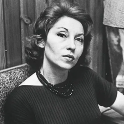
Clarice Lispector
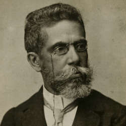
Machado de Assis
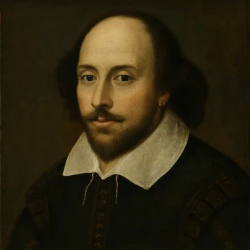
William Shakespeare
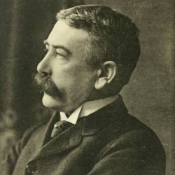
Ferdinand de Saussure
Com qual outro autor(a) ou pensador(a) eu me identifico?
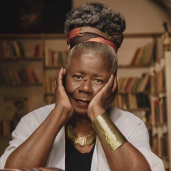
Conceição Evaristo
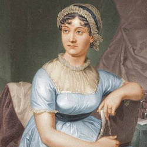
Jane Austen
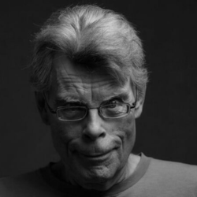
Stephen King
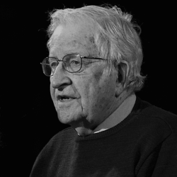
Noam Chomsky
Qual é a minha grande causa ou tema literário favorito?
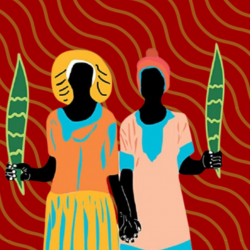
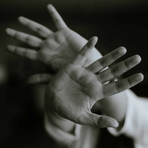
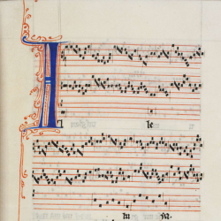
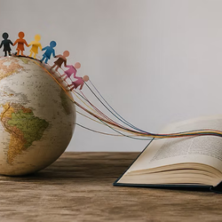
Qual estilo de literatura ou texto mais me atrai?
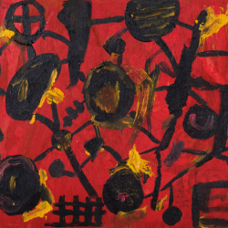
Merguho profundo na mente dos personagens.
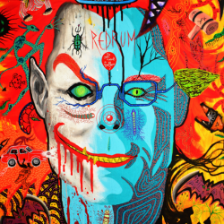
Textos que refletem e desafiam a sociedade.
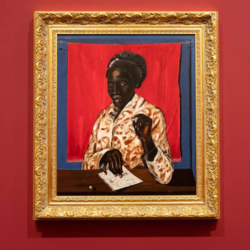
Histórias que prendem do início ao fim e provocam fortes emoções.
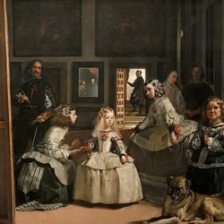
Desvendar as regras e os códigos por trás do que falamos.
Qual frase ou visão de mundo mais me define?
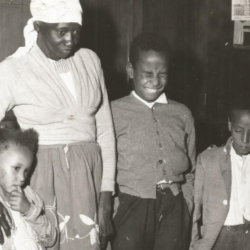
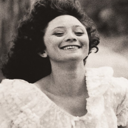
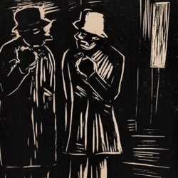
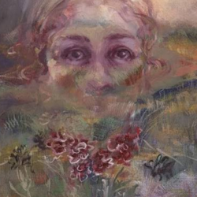
Qual doce define a minha alma literária?
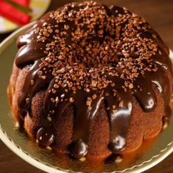
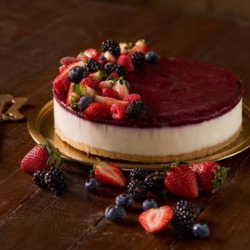
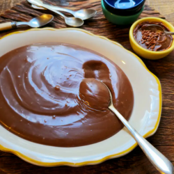
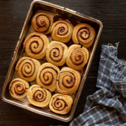